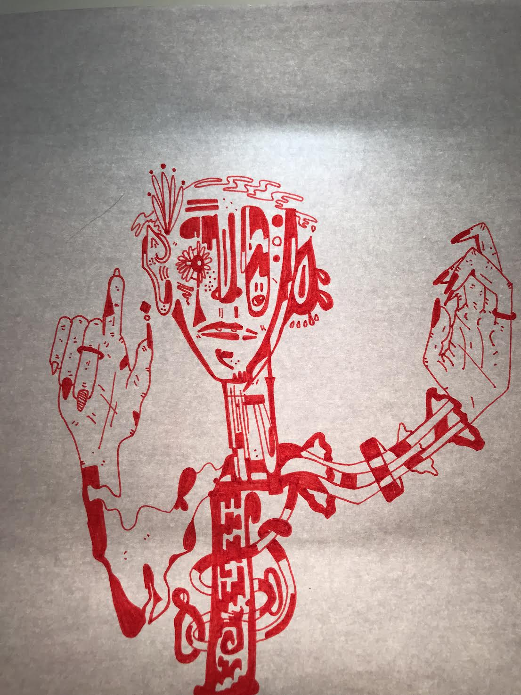
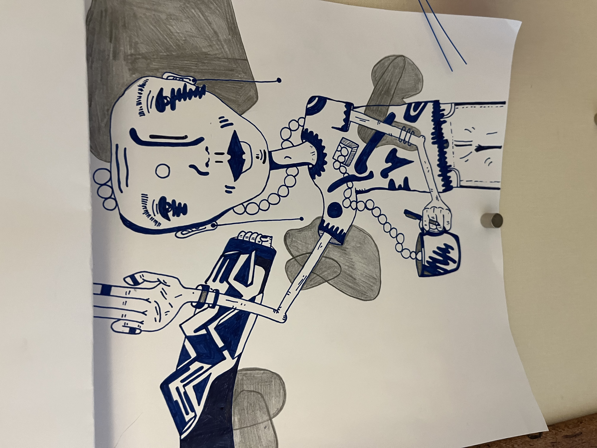
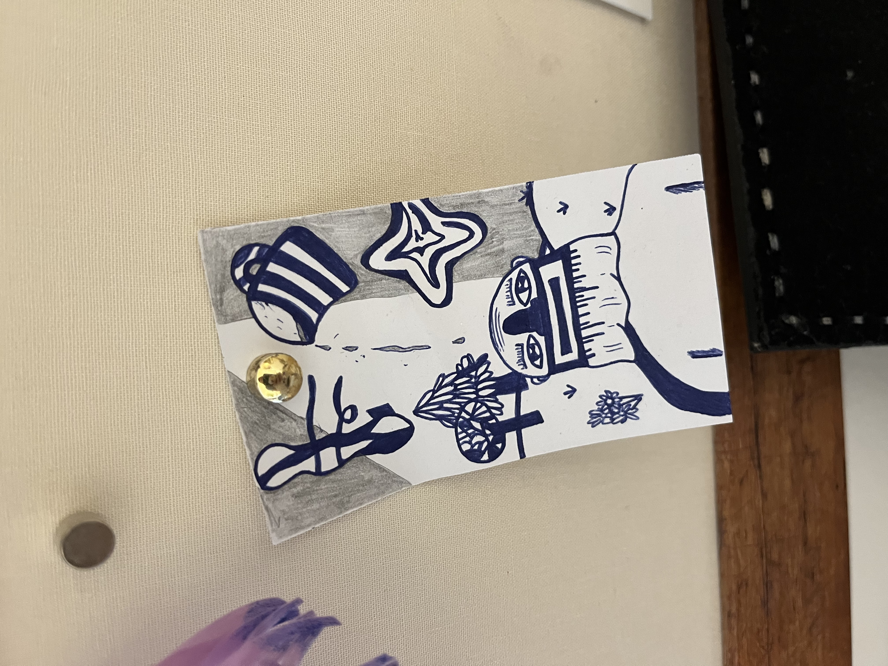
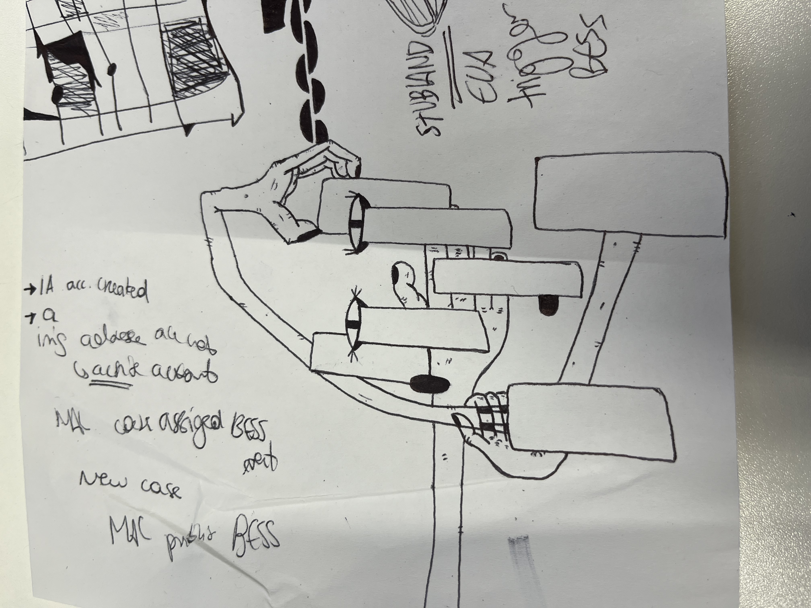
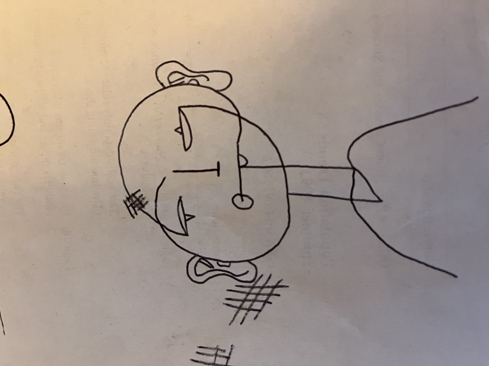

I am a Software Engineer. I have primarily worked as a Backend engineer, although I enjoy picking up frontend work when possible (has mostly been React thus far). I am really interested in picking up and improving other languages e.g. python and DevOps tools e.g. Kubenetes and Terraform. The most common tech stack I have worked with involves Java microservices using the Spring Framework hosted on AWs, orchestrated via Kubernetes and in communication with an SQL Posgres database. I have worked heavily with Kafka streams, RESTful APIs, OAuth2.0 (JSON tokens) and various integrations. I love consistent, clean code and I (try to most of the time 🙃) code in a Test Diven Development manner. Small examples below.
Java · Spring framework · Kafka · RESTful APIs · JUnit & Integration Testing · TDD · SQL · Docker · Kubernetes · Grafana · MAXQDA
🔠 I am half American and have studied and worked in English for many years.
🥖 Je suis allé à l'école française de Milan (Italie), donc je parle français.
🍕 Ho vissuto a Milano per nove anni, dunque parlo l'Italiano.
I really like illustrations, doodling and doing little drawings. Here are a recent few.





Like a huge number of other young professionals, I am lucky enough to get to channel my existential angst in a high number of long runs, road bike rides and climbs.
I decided to do a part-time MSc in Public Policy in 2023 on the side. There are a couple of essay on subjects I find particularly interesting that I got to write about as part of this MSc that I would be happy to share if wanted (for safety have not linked here directly). I took particular interest in topics like collective action (especially Elinor Ostrom work), the use of behavioural science to to better implement policies (e.g. nudges), and participatory policy making. In regards to specic topics I was interested in the landsape of assisted dying policies in Switzerland by comparing it to the ones in New Zealand and Australia. I have recently applied to volunteer at King's College Hospital. I have not started yet, I have passed initial application and DBS, but wanting to get more training to volunteer on a specific ward. I am excited to see if I can be helpful in any way, meet people and get closer to understanding how people experience the NHS (both staff and patients).
If you think I could be a match to the skills needed as part of your team, I would love to hear from you. Here is a copy of my CV. Thank you so much for taking the time to look through my information. :) Hope you find and get to do the things you love :)